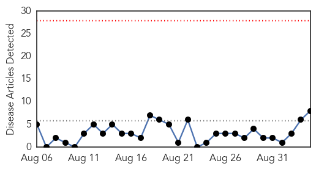
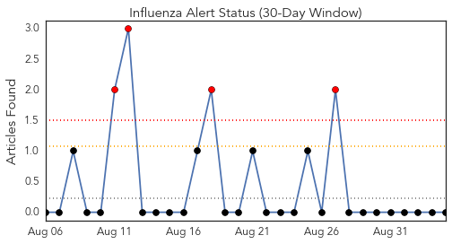
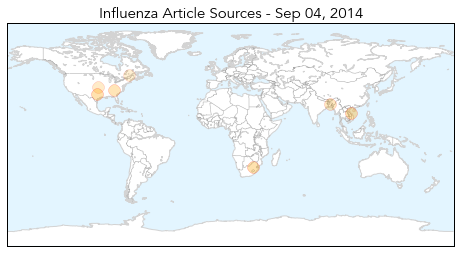
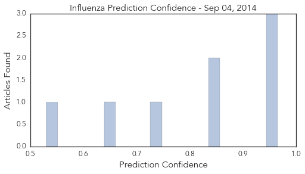

Toggle navigation
Early Warning
Daily Alerts
Influenza
Sep 04, 2014
Compare to:
-
Dengue Fever
Hemmorhagic Fever
Mold/Fungal Infection
Meningitis
Pertussis / Whooping Cough
Middle East Respiratory Syndrome
Cholera
Hepatitis
Chikungunya
Yellow Fever
Bubonic Plague
West Nile Virus
Swine Flu
Ebola
Measles
Unknown
Mumps
30 Day Trends
Web: 0
alerts
, 0
warnings
Twitter: 4
alerts
, 0
warnings
Top Articles:
0.965
Flu Scan for Sep 04, 2014
0.956
Get vaccinated now for flu season
0.949
Flu vaccine protects mothers, babies
0.849
High-Dose Flu Shot Benefits Older Patients, Study Finds
0.846
Flu vaccinations already available in East Tennessee
0.739
Flu shots effective in pregnant women, whether or not they are infected with HIV
0.644
Flu vaccine supplier GSK says it can't fill all of its supply order
0.530
GSK won't be able to supply 2 million doses of flu vaccine promised for 2014-15
Top Tweets:
No tweets found for Sep 04, 2014
Web/News Articles

Tweets

Article Locations

Article Confidences
